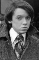

Country:United States, 122 minutes
Spoken languages:
Genres:Drama, Romance
Director(s):Ed Harris
Writer(s):Susan Emshwiller, Steven Naifeh, Gregory White Smith, Barbara Turner
Video Codec:Unknown
Number: 1626


Certification:R
Storyline:
In August of 1949, Life Magazine ran a banner headline that begged the question: "Jackson Pollock: Is he the greatest living painter in the United States?" The film is a look back into the life of an extraordinary man, a man who has fittingly been called "an artist dedicated to concealment, a celebrity who nobody knew." As he struggled with self-doubt, engaging in a lonely tug-of-war between needing to express himself and wanting to shut the world out, Pollock began a downward spiral.
Cast: 


Medium: Original DVD,
Loaned: No
Aspect ratio: Unknown